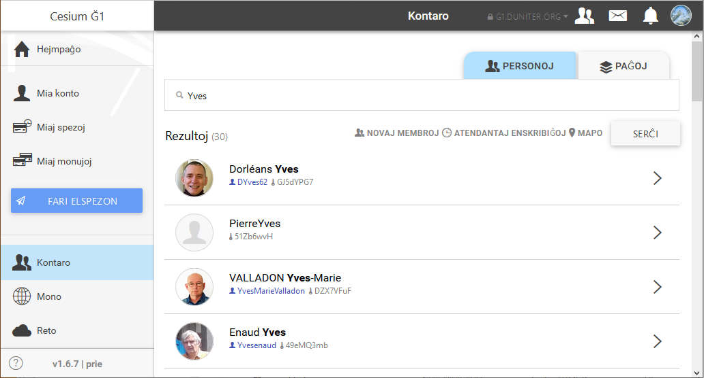

Kiam vi renkontas personojn fizike, ekzemple dum la aperitivoj libera mono, se vi deziras interŝanĝi aĵojn aŭ servojn per Ğ1, vi povas uzi la kontaron.

La kontaro ebligas facile retrovi la kontojn de aliaj personoj (aŭ identecoj).
Ĉiuj kontoj, ĉu ili estas "membro-kontoj" aŭ "simplaj monujoj", listiĝas en la kontaro.
La kontaro ebligas:
Kiam vi traserĉas membron per ties familia aŭ persona nomo, pripensu ke:
En ambaŭ kazoj, vi riskas sendi Ğ1 al malĝusta persono.
Do certiĝu, kun la persono al kiu vi deziras sendi Ğ1, ke la publika ŝlosilo de ties konto ja komenciĝas per la 8 unuaj signoj afiŝitaj apud la bildeto montranta ŝlosilon.